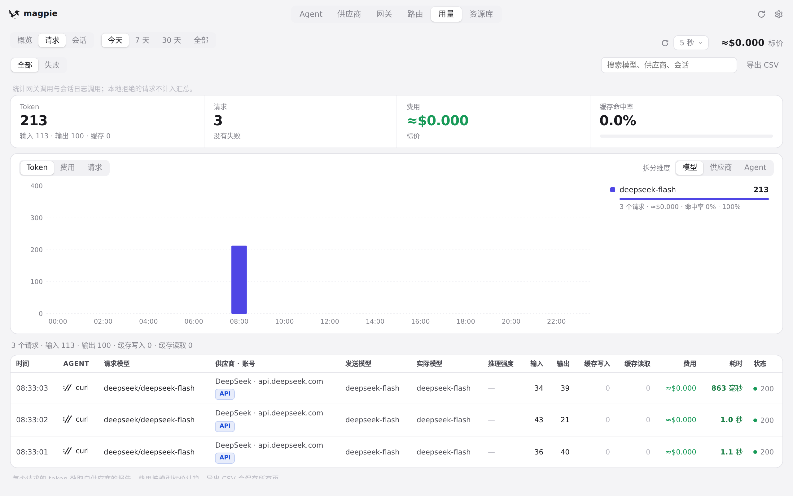
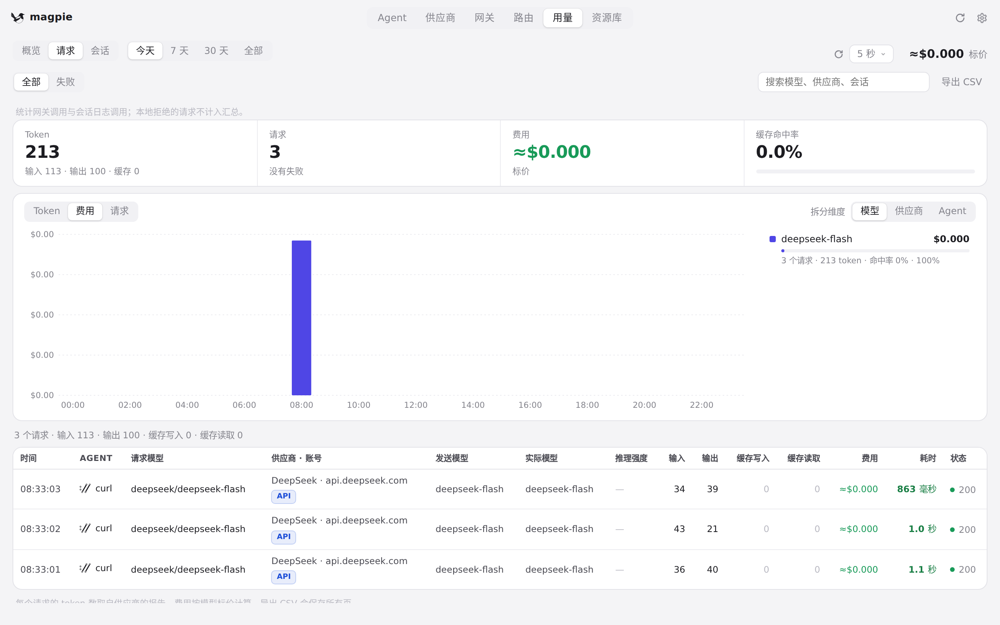
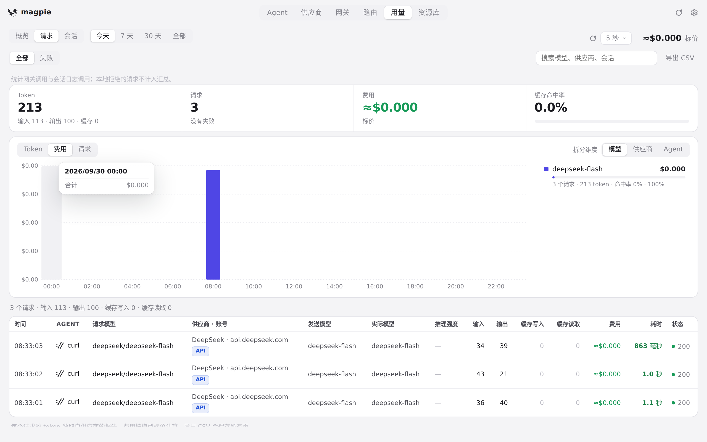
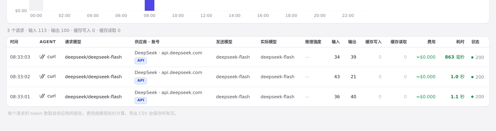
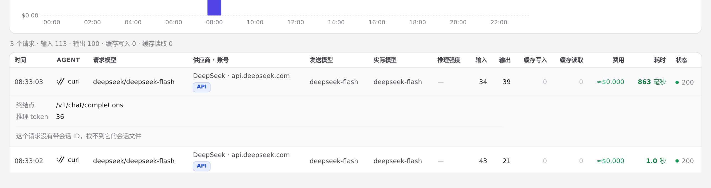
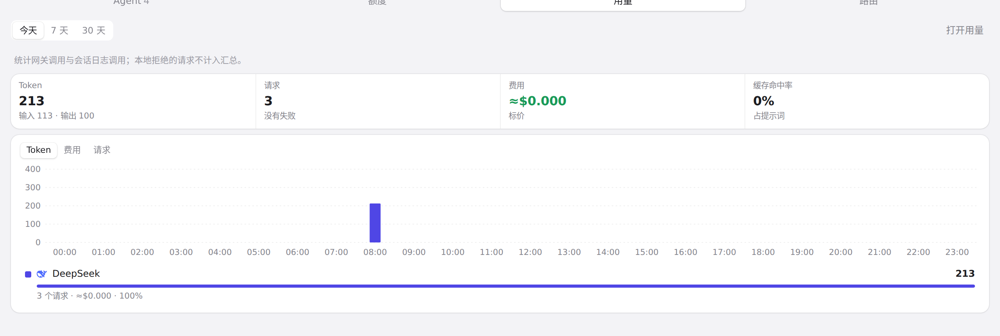
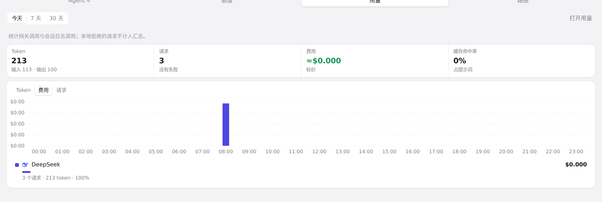

#239 界面预览
commit 7f4e955 · 回到 PR · 本次 PR 在用量页的「请求」新增看板（总计、趋势图、排行与筛选），支持按模型/供应商/Agent 拆分和 Token/费用/请求数切换；请求行可展开查看详情与来源徽标，并新增自动刷新周期选择。托盘面板新增「用量」标签，提供相同口径的紧凑图表。
红线是鼠标走过的轨迹，红色圆环是一次点击；底部文字是这一步在做什么。空格暂停，← → 逐段查看。

用量看板与请求详情 · 「请求」标签顶部的新看板：四个总计、趋势图和排行

用量看板与请求详情 · 以费用为指标的趋势图与排行

用量看板与请求详情 · 柱子悬停后显示的明细提示

用量看板与请求详情 · 请求列表：来源徽标、时长颜色和状态列

用量看板与请求详情 · 展开后的请求详情：请求 ID、端点、首响等字段

面板用量标签 · 面板「用量」标签：紧凑总计、小趋势图和排行

面板用量标签 · 面板以费用为指标的图表和排行